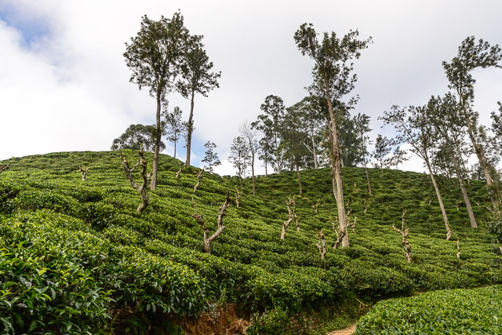
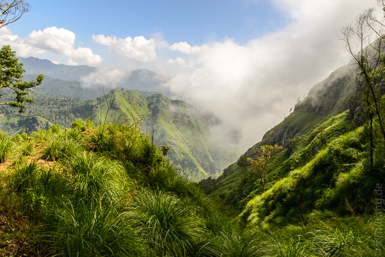
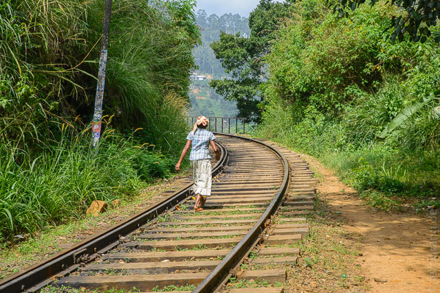
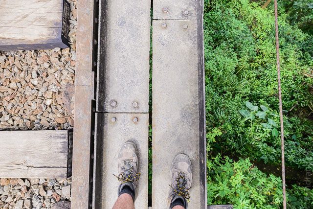
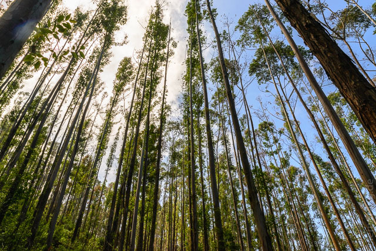
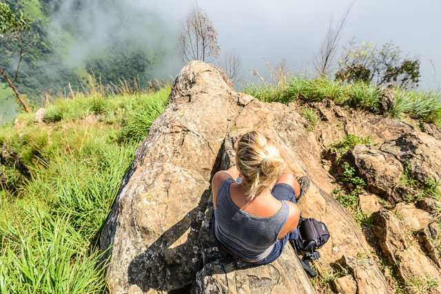
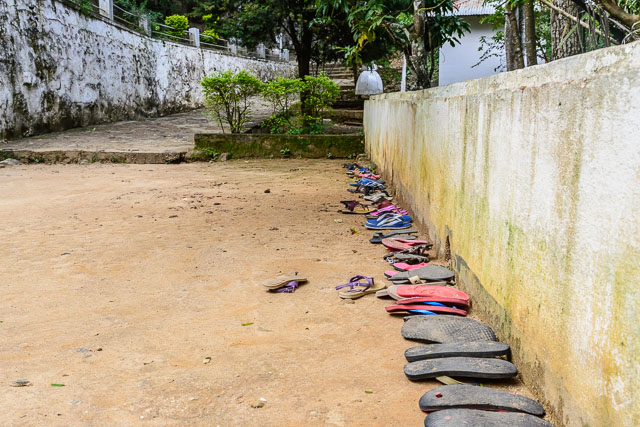
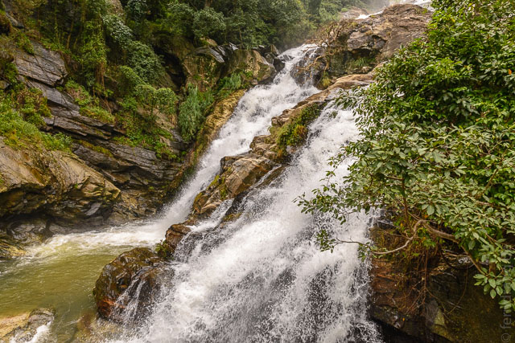

Die Regenfälle haben endlich auch im Hochland aufgehört. Daher machen wir uns mit dem Bus auf den Weg nach Ella. Die Fahrt dorthin führt sehr lange durchs Flachland, das gruselig schnell an uns vorbei zieht. War der Busfahrer ein Wahnsinniger? Wir haben gehört, die Buscrews würden Wetten über die Strecken abschließen. Es ist zumindest tröstlich, dass die Fahrweise aus dieser Perspektive "vernünftig" scheint. Hinter Welawaya geht es dann plötzlich in steilen Serpentinen die Berge hinauf. Auf dem Weg hat man schon viele schöne Ausblicke auf die grünen Hänge.
Ella ist ein reines Touristendorf. Es gibt eigentlich nur Gasthäuser und Restaurants und so gut wie kein einheimisches Leben. Unser "Sooriya Guesthouse" hat große, leicht feuchte Zimmer (ganz Ella ist leicht feucht) und ist super billig. Noch am Nachmittag sind wir zum "Little Adams Peak" spaziert. Der Name ist reines Marketing. Auf dem Hinweg durch Teegärten wurden wir von einer aggressiven Kuh verfolgt, aber der Ausblick von der Spitze lohnt sich sehr. Die Hänge fallen steil ab ins Tal und die Wolken schieben sich immer wieder vor Teile der Szenerie.
 Am nächsten Tag sind wir direkt nach dem Frühstück zum Ella Rock aufgebrochen. Die Wanderung führt zuerst die Bahnschienen entlang. Das ist so ungefährlich wie selten, weil wegen der schweren Regenfälle die Bahnen nicht mehr fahren. Tatsächlich ist die Trasse an mehreren Stellen verschüttet worden. Der Aufstieg wird gegen Ende etwas steiler und anstrengender, aber man landet auf einem Felsvorsprung mitten in den Wolken. Dafür kann man auch mal schwitzen. Zwischendurch fehlt mal eine Wolke und man hat einen phantastischen Blick.
   Anschließend war noch genug Zeit für einen kurzen Ausflug zum nahegelegenen "Dowa Tempel", der sich aber nicht so sehr lohnt, wenn man schon in Dambulla war. Südlich von Ella liegen noch die Rawana Falls. Dort rauscht ein dicker Wasserfall den Berg hinunter. Der Rückweg über die viel befahrene Straße ist aber nicht so spannend.
 Traditionell endet der Tag mit einem kräftigen Regenguss, und da wir so hoch sind, hängt sogar eine Wolke auf unserer Terrasse.